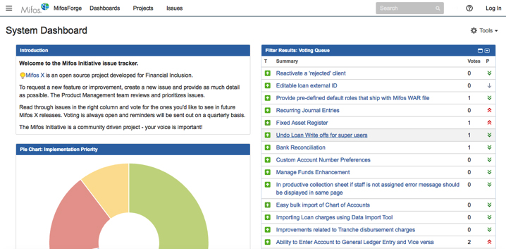
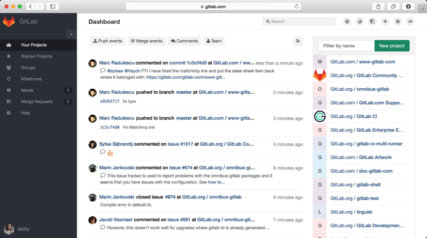

-

- Table of Contents
- Home
- A. Building a Program
- I. GitHub for Version Control
- II. Issues Management Tools
- III. Software Stack Guidelines
- IV. QA Process, Jenkins, Docker
- V. Project Sheets
- VI. Volunteer Feedback Mechanism
- VII. Website Space for Volunteers
- B. Social Good Hack Events
- Types of Events
- Sample Hackathon Schedules
- Marketing and Recruiting
- Volunteer Considerations
- C. Social Good Development Index
- Technical Volunteer Checklist
- Open Source Licenses
- Tech For Good Volunteer Orgs
- Nonprofit Tech Evolution
- Basic Developer Roles?
- Common Open Source Tools
- Tutorial: Basic Deployment
- Tutorial: Hosting a Static Website
- Accessibility Testing Tools
- Why Open Source
- Code Alliance Initiative
- Deep Datta

Issue Management Tools and Processes
You should have a consistent way to track issues so that both your internal team and external volunteer developers are always on the same page. The more you can get your engineers and products managers to input tickets / issues in a way any volunteer can understand them, the less work you’ll have to do later to translate your team’s internal issues to outside volunteers and vice versa.
Most organizations use either JIRA Issue Tracker or they use GitHub’s Issue area for all of their issue tracking; many organizations use both. Organizations often find that they prefer JIRA for internal issues, and GitHub to deal with issues that are more appropriate to have outside volunteers work on. The process should be customized to your workflow, but basic guidelines suggest that small issues specific to 1 product are better tracked in GitHub itself, while larger issues that may involve multiple projects are better tracked using JIRA. Again, there will be some experimentation in how to best manage issues, but these two tools will be paramount to your success.
GitHub Issue Tracker
In GitHub, issues are tracked through each repository. For example, if you have a repository for your nonprofit website called “nonprofit-site”, you would go into that repository and you will see a tab called “issues”. You can create all the issues that apply to this project. Developers will know that they are working on this specific repository and all the code is in one place.
Tutorial: Create your first issue on GitHub
To create an issue from this area, you can click on the green “New Issue” button.
You can then enter an issue title and description, and finish by clicking on the “Submit New Issue” button. The title should define the issue such as “need spam filter for wordpress” and the description should be as detailed as possible and may want to include the specific libraries or skills you think are needed for the issue. If there are login credentials needed for the issue, you may want to post instructions in how to attain them.
Also, users can comment on issues. Make sure you’re aware that users are writing to you directly from this issue tracking area.
Once you have a mature developer environment, volunteers will work on these issues independently and push them back to your repository when they’re complete. You should be alerted by email from GitHub every time a volunteer wants to push their code. From your side, this is called a “pull request” and volunteers are actually asking that you pull their changes back to your repository.
Once an issue has been completed, you can close it, and leave a comment. It’s always recommended to leave specific comments when working on GitHub so future volunteers can understand the progress of your product. Remember to update issues once they’re closed on your gh-pages as well.
JIRA Issue Tracker:
JIRA is not an open source application, but it is widely used by technologists in all fields and has free licenses for nonprofits. JIRA is an issue-tracking product made by a company called Atlassian.
You can apply for a free license for JIRA and other Atlassian products here: https://www.atlassian.com/software/views/community-license-request
Once you get your copy of JIRA setup, you’ll want to learn how issues are tracked in the system. In the example from Mifos (below), you can see that issues are stated in green on the right side of their dashboard. JIRA is a highly customizable product and you’ll want to figure out the best way to display and track issues for your team.
Some JIRA pages are password protected, so make sure to open up any pages that you want volunteers to have access to.

GitLab Issues Board:
GitLab is an open source tool that integrates with your existing GitHub account. It’s a great way to manage teams through an Agile or Kanban type of process. Each user must have a GitLab account for you to add and assign them tasks on GitHub.
